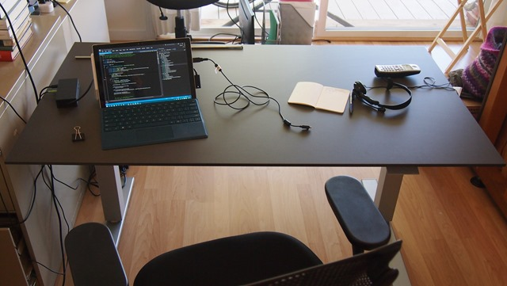

Review: Human Scale Float Table and my experience with the online order and table setup
Woot! It works. I am standing at my desk typing this, and I am sooooo excited.
My first impression is optimistic. I like the table, and though it does not work out-of-the-box, the support at Human Scale has been friendly, responsive, and professional. I expect that Human Scale will quickly resolve problem. The problem, of course, is that the table does not go up and down as expected, though it does look very nice in the office.
{kind=link}
Up

{kind=link}
Down
CAUTION
- Don’t have water on the table the first time we raise the table.

- Make sure items are unplugged the first time we raise the table.
Timeline
Mon 28 Mar
We ordered the Float Table (Hooray! I am very excited.)
Wed 06 Apr
It arrived (Nice! This is earlier than the estimated arrival date.)
Thu 07 Apr
(We are super excited to set it up and to start using it today.)
10:15 am, started setup
12:00 pm, finished setup. The up-down adjustment does not work and there is no tension indicator. (Bummer. This is the first bad experience.)
12:10 pm, reported table failure to Human Scale Support, 1-800-400-0625.
Support made two promises:
- to send me an email with a ticket number. In the meantime, if I phone back, I can use extension 2143 to as my ticket number.
- to contact me by phone in 24-48 hours to setup a technician house call. (This will be interesting, as we live on a small island.)
12:17 pm, support sent me an email with a ticket number. (Good job!)
Friday 08 Apr
2:30 pm, phoned support to enquire about the state of my support ticket. Support was again friendly and professional.
- I learned that Human Scale is planning to send me a replacement table base at no cost.
- I asked to speak with the technician on the phone, before Human Scale sends the replacement, because if a technician can walk me thru the repair on the phone, that would save me the inconvenience of dismantling the existing table, return mailing it to Human Scale, and assembling the replacement table.
- Support promised to speak with the technician about this and to phone me back.
Monday 11 Apr
Support emailed a technical support document that included a solution to the problem. We haven’t been able to talk with a technician on the phone, yet. Support has promised to send another email when a technician is available to talk on the phone.
Preparing the Space
{kind=link}
Existing Desk
{kind=link}
No Desk
{kind=link}
Float Table
Setting up the Float Table
{kind=link}
Materials
{kind=link}
Screws
{kind=link}
What do these do?
{kind=link}
Leftover materials and screws
Bummer. It does not work out of the box.
{kind=link}
This is not what we’re supposed to see here. There should be a little red min/max tension level indicator. Result: it’s broken. Human Scale has promised to send a technician to fix it.
It’s Working!
With some persistence from the friendly technical support, the up-down desk is now going up and down as designed.
The Float Brake will be locked down through vibration from shipping. Push down hard on Table while holding in the Paddle
Unfortunately, there remains no tension level indicator on the min-max scale. Tech support is working with us on this.
{kind=link}